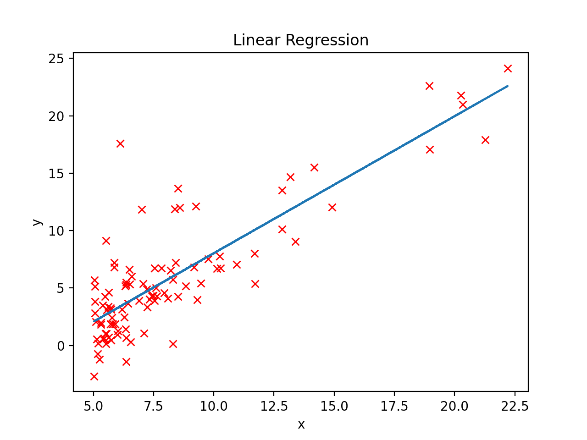
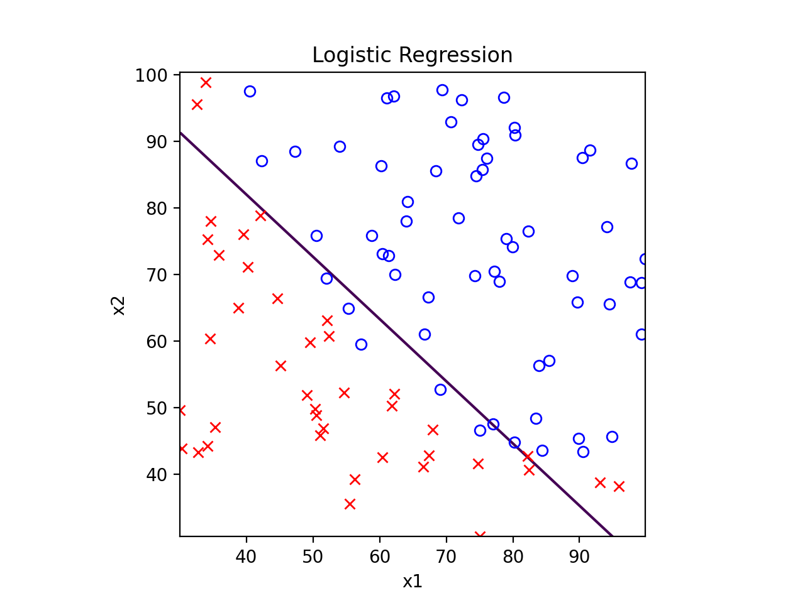
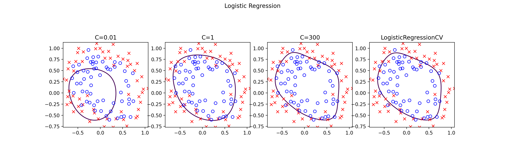
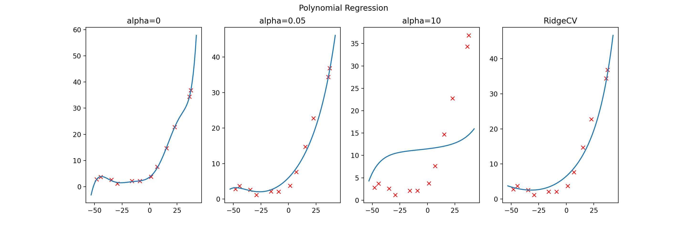
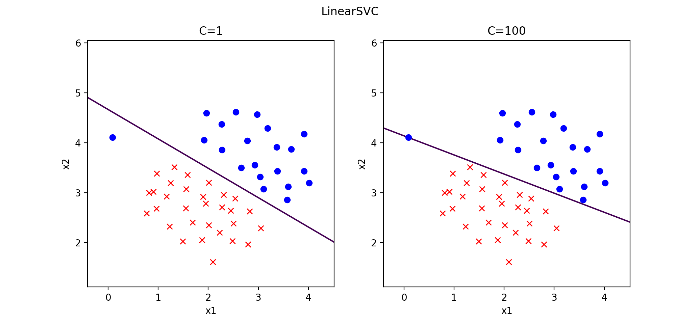
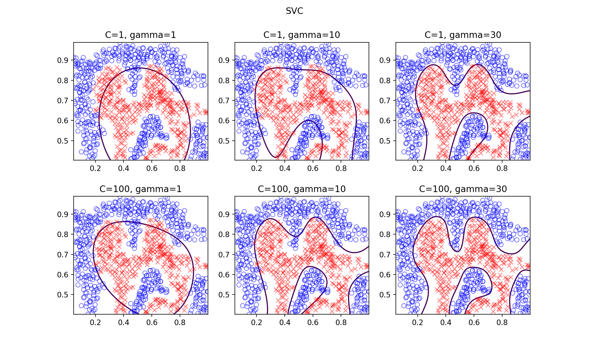
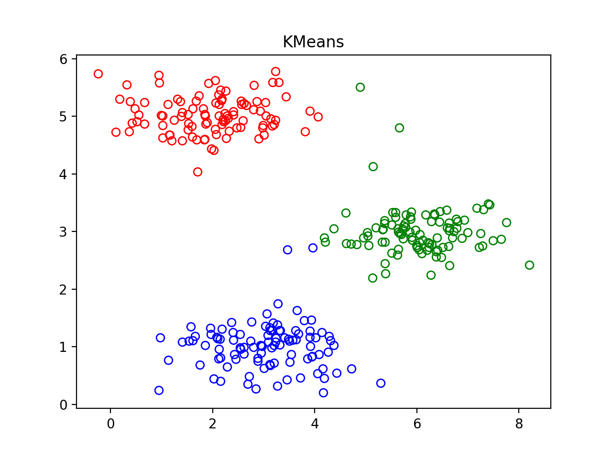
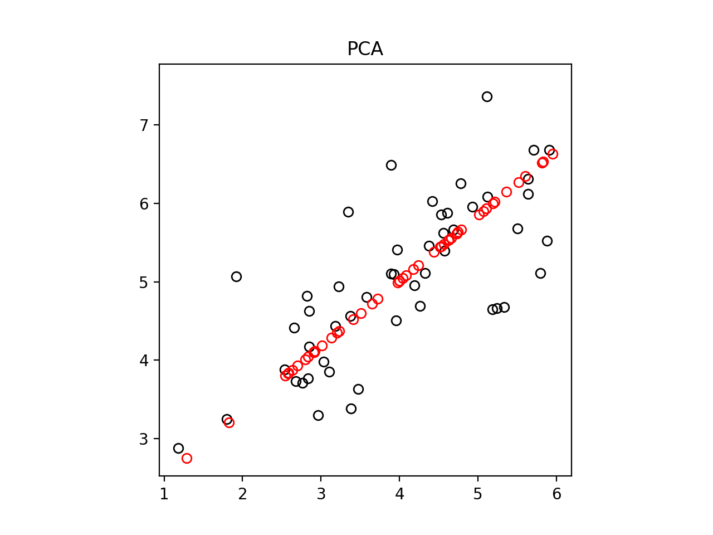
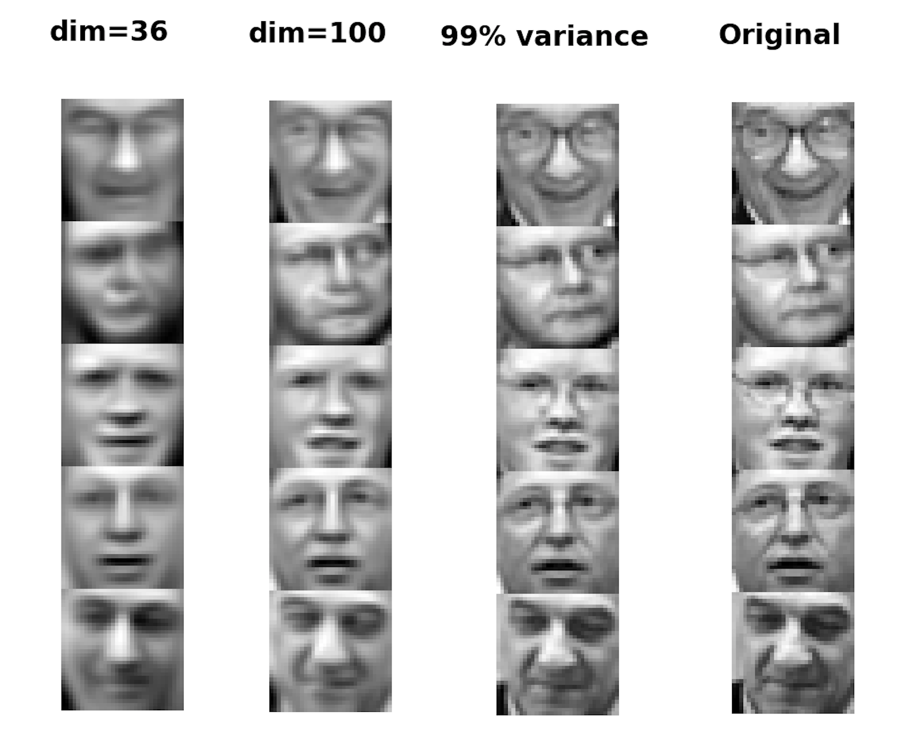
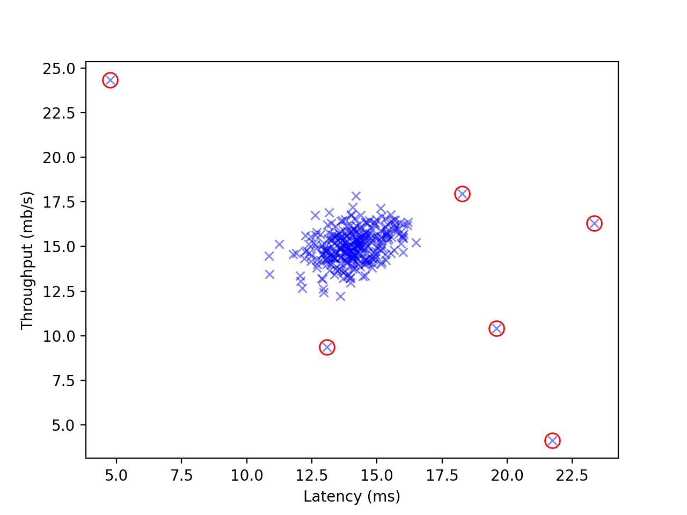

[吴恩达机器学习]总结与使用scikit-learn
吴恩达机器学习系列课程：https://www.bilibili.com/video/BV164411b7dx
总结
吴恩达老师的机器学习系列课程到这里就结束了，\(40\) 天里，我学到了许多有趣的、极具吸引力的机器学习知识，相信若干年后想起这段时光，仍然会感谢吴恩达老师带我入门了这个领域。
在这门课上，我们学习了以下内容：
- 监督学习 Supervised learning
- 线性回归 Linear regression【笔记一、二、三】
- 逻辑回归 Logistic regression【笔记四、五、六】
- (BP)神经网络 Neural networks【笔记七、八】
- 支持向量机 Support vector machines【笔记十】
- 无监督学习 Unsupervised learning
- K-Means【笔记十一】
- 主成分分析 Principal component analysis【笔记十二】
- 异常检测 Anomaly detection【笔记十三】
- 特殊应用/特殊专题
- 推荐系统 Recommender systems（协同过滤 Collaborative filtering）【笔记十四】
- 大规模机器学习 Large scale machine learning
- 建立机器学习模型时的一些建议
- 高方差与高偏差 Bias / variance【笔记九】
- 正则化 Regularization【笔记五】
- 对学习算法的评价：precision, recall, f1 score
- 学习曲线 Learning curves【笔记九】
- 误差分析 Error analysis
- 上界分析 Ceiling analysis
使用 scikit-learn 进行机器学习
学习过程中的代码基本都是自己实现的，运行效率和使用容易程度上不敢恭维……现在清楚了原理之后，就可以放心大胆地调包了😂
线性回归
1 | |

1 | |
逻辑回归
1 | |

1 | |

多项式回归
1 | |

BP 神经网络
1 | |
支持向量机
1 | |

1 | |

K-Means
1 | |

主成分分析
1 | |

1 | |

异常检测
1 | |

[吴恩达机器学习]总结与使用scikit-learn
https://xyfjason.github.io/blog-main/2021/02/01/吴恩达机器学习-总结与使用scikit-learn/